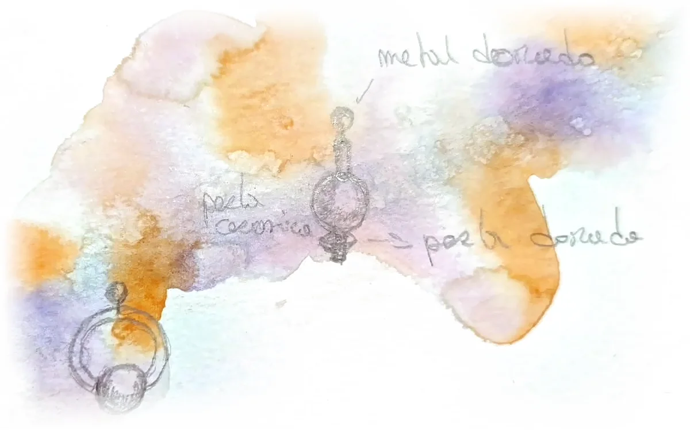
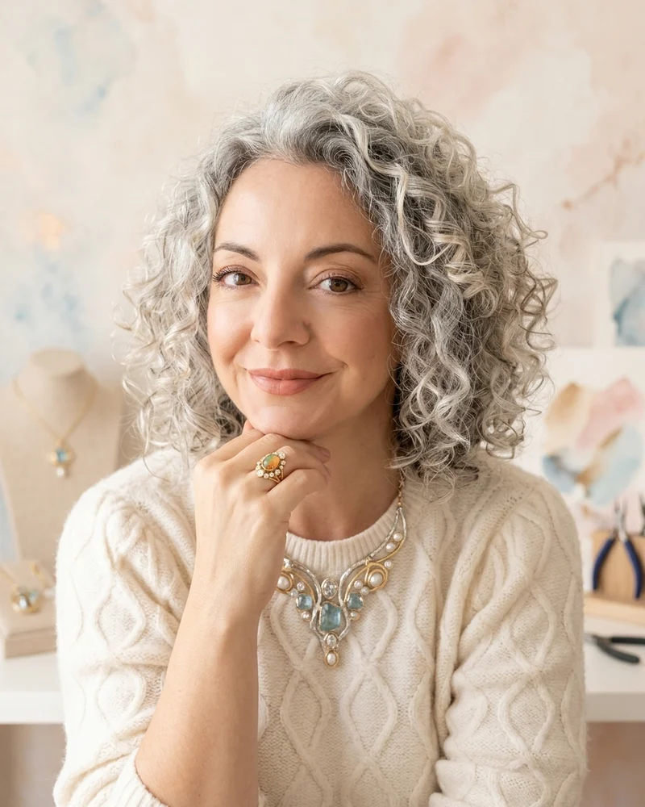

No es una joya.Es tu historia.It isn't jewellery.It's your story.
Charlotte escucha tu historia, también lo que no dices, la pinta en acuarela y lo convierte en un collar único, hecho a mano en Tenerife.Charlotte listens to your story, including what you leave unsaid, paints it in watercolour and turns it into a one-of-a-kind necklace, handmade in Tenerife.
Escribir a CharlotteWrite to CharlotteCómo nace tu piezaHow your piece is born
Tu historiaYour story
Nos vemos en tu casa, tu hotel o un lugar que te guste. Escucho con calma.We meet at your home, your hotel or a place you love. I listen calmly.
Tus piedrasYour stones
Elegimos juntos piedras y metal por lo que significan para ti. Conoces el precio antes de empezar.Together we choose stones and metal for what they mean to you. You know the price before we begin.
Tu acuarelaYour watercolour
Pinto tu historia: el diseño de tu pieza nace en acuarela.I paint your story: the design of your piece is born in watercolour.
Tu collarYour necklace
Lo hago a mano y te cuento cómo tu historia tomó forma.I make it by hand and tell you how your story took shape.

«No hay reglas en la creatividad.», Charlotte“There are no rules in creativity.”, Charlotte
Piedras que cuentan algoStones that tell something
Cada piedra trae su origen y una tradición. Las elegimos por tu historia, tus colores y, si quieres, tu signo.Every stone carries its origin and a tradition. We choose them for your story, your colours and, if you like, your sign.
lo que cuenta la tradición, no promesas: hay quien cree y quien disfruta del gesto.what tradition tells, not promises: some believe, some enjoy the gesture.
Lapislázuli y nácar: fotos reales del collar de Charlotte. Las demás piedras son muestras de color hasta tener sus fotos.Lapis lazuli and mother-of-pearl: real photos from Charlotte's necklace. The other stones are colour samples until their photos arrive.

Charlotte
«Soy Charlotte. Me encanta ir profundamente con las personas y adentrarnos en quiénes somos.»“I'm Charlotte. I love going deep with people and finding out who we really are.”
Joyera de formación, con Bellas Artes y diploma de joyería, y artista. Llevo años haciendo collares con piedra natural, metal y lo que cada historia pide.Trained jeweller, with Fine Arts and a jewellery diploma, and an artist. I have been making necklaces for years, with natural stone, metal and whatever each story asks for.
NuMA viene de Nuria, mi abuela, y Marisa, mi madre: el amor y el cuidado con los que aprendí a crear.NuMA comes from Nuria, my grandmother, and Marisa, my mother: the love and care I learned to create with.
hablo español, français y EnglishI speak Spanish, French and English
Primera ediciónFirst edition
100 €500 €€500
+ materiales, que eliges conmigo y conoces antes de empezar. A cambio te pido tu opinión sincera y, si te apetece, poder enseñar cómo nace tu pieza.+ materials, chosen with me and known before we begin. In return I ask for your honest opinion and, if you like, permission to show how your piece was made.
Quiero una de las plazasI'd like one of the placesPreguntasQuestions
¿Dónde nos vemos y cuánto dura?Where do we meet, and how long?
En tu casa, tu hotel o un lugar que te guste, en Tenerife. Unas horas, sin prisa.At your home, your hotel or a place you love, in Tenerife. A few unhurried hours.
¿Cuánto cuestan los materiales?How much are the materials?
Depende de las piedras y el metal. Te digo el precio antes de empezar.It depends on the stones and metal. I tell you the price before we begin.
¿Puedo regalarlo?Can I give it as a gift?
Sí. Elegimos las piedras pensando en esa persona.Yes. We choose the stones with that person in mind.